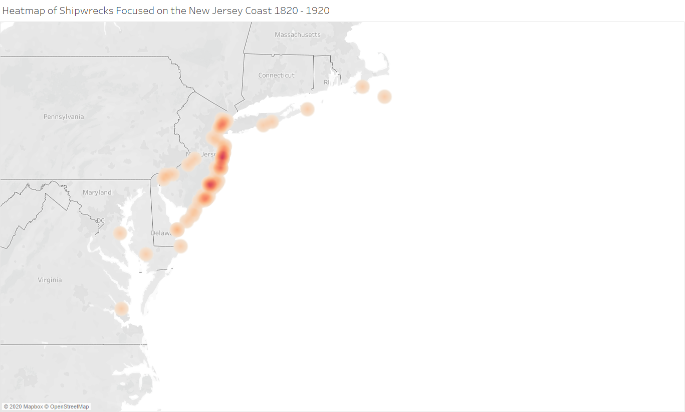

In the greater New Jersey area we have a few hundred years of shipwreck history. What caused these wrecks, the frequency, and how extreme the results turned out to be were all dependant of the time. It became increasingly commong for wrecked ships to get refloated or towed into harbor as technology and inphastructure grew.
There's a few major hotspots in the new jersey area. One of the largest spots with wrecks is the north coast of New Jersey. The north coast is the south side of New York Harbor, consistently one, or the largest harbor in the United States. Many of the ships in the area were either bound for, or coming from New York, or the New Jersey side Sandy Hook. This although actually one of the better harbors created, excessive traffic in the area made it a commong area to see shipwrecks. Another common area was the eastern coast of New Jersey, specfically places like Tom's River, but shipwrecks are spread fairly uniformly along the coast. The eastern coast of New Jersey is mostly sandbars which provide and interesting challenge for ships, esspecially in the dark. The last major section of New Jersey to see shipwrecks is the head of the delaware river, Cape May.
This google maps representation is a selection of some of the more detailed enteries for shipwrecks. One of the easy takeaways from this map is that almost no part of the new Jersey coast is not covered in shipwrecks. This data set only comprises about a fifth of the total dataset. There are a few major excpetions though. Past Cape May there are actually very few wrecks. Additionally, the inside of New York Harbor also has a good record.
Learn More About Shipwrecks »